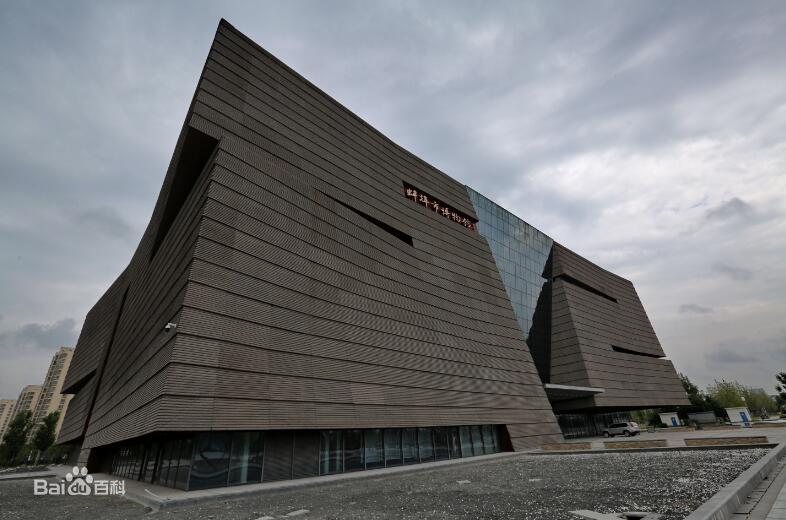
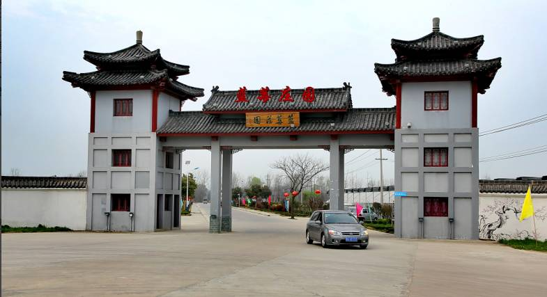
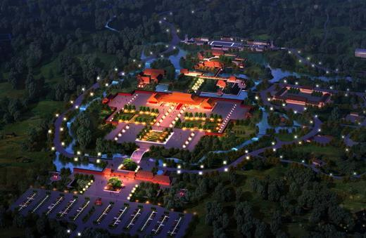

第一站:龙子湖风景区

简介：
子湖风景区位于安徽省蚌埠市龙子湖区境内，为国家AAAA级旅游景区、国家级生态示范区和省级风景名胜区。主要由龙湖、曹山、雪华山、西芦山及锥子山组成，大体呈三山夹一湖的独特地貌。根据地理位置、地貌及景观特征，龙子湖风景区划分为北湖景区、南湖景区、西芦山景区、锥子山景区等四大景区
| 门票价格： | 免费 |
| 建议游玩时间： | 两小时 |

第二站:蚌埠市博物馆

简介：
蚌埠市博物馆坐落于龙子湖西侧市民广场，市政府以南，是一座以展示蚌埠古代历史、近现代城市发展史以及淮河历史文化为主题的综合性博物馆。
| 门票价格： | 免费 |
| 馆藏精品: | 江南长江水师提督之印 |
| 建议游玩时间： | 两小时 |
第三站:蓝莓庄园

简介：
蚌埠市蓝莓庄园生态农庄内建筑风格均为徽派建筑--白墙黑瓦、高脊飞檐、亭台楼阁、古朴自然。庄园内有绿色养生餐厅，餐厅内绿植、假山、瀑布、小桥流水、竹木亭阁的交相呼应，为就餐者提供绿色、优美、舒适、悠闲、宜人的就餐环境。
| 门票价格： | 不详 |
| 建议游玩时间： | 两小时 |
第四站:大明园

简介：
位于安徽省蚌埠市东南郊龙子湖区的西芦山内，占地总面积约5121亩，建设用地883.5亩，属于未来城市发展的核心地带。大明文化产业园项目，规划内容是“一心一镇一区三园”的旅游空间发展格局。一心：综合服务中心；一镇：大明小镇；一区：皇家温泉度假区；三园：乐孝园、皇家主题游乐园、皇家运动休闲园。
| 门票价格： | 成人218元，儿童68元 |
| 建议游玩时间： | 四小时 |